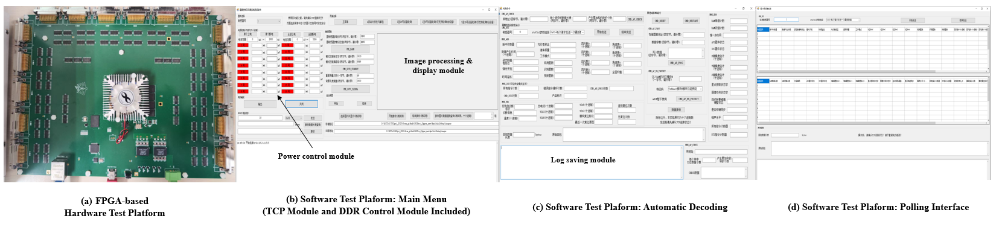
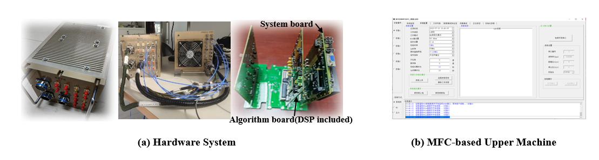
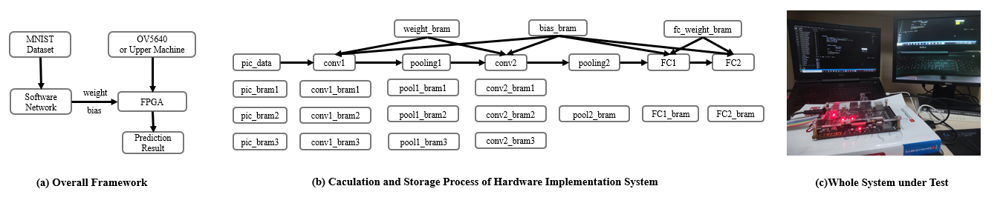

Yanjie Huang
Currently I am a master student at School of Integrated Circuits and Electronics, Beijing Institute of Technology (BIT), where I work on System on Chip (SoC) design, under the guidance of Associate Professor Weijiang Wang. From March 2021 to March 2022, I interned at Multimedia Information Processing Lab (MIPL) at Peking University, advised by Assistant Professor Yang Liu, conducting research on computer vision. I completed my bachelor`s degree at School of Information and Electronics, Beijing Institute of Technology, majoring in Electronics and Information Engineering.
Research&Publications
Hardware Acceleration of Direction-of-arrival Estimation Algorithms
1.Developed a parallel hardware structure for efficient computation of covariance matrices, achieving low latency and high throughput through parallel computing techniques.
2.Devised a reconfigurable hardware structure for QR decomposition of general square matrices. With logic reuse and parallel computing techniques, it performed robustly across matrices of varying sizes.
3.Engineered a high precision, low delay hardware acceleration structure for the ESPRIT algorithm, compatible with different parameters, validated through extensive experimental analysis. The work has been submitted to IEEE Transactions on Very Large Scale Integration Systems (TVLSI).
Weakly Supervised Video Moment Localisation
The following work was done during my internship at MIPL, PKU.

Minghang Zheng , Yanjie Huang , Qingchao Chen , Yuxin Peng , Yang Liu
Project Page | Paper | Cite | Code
The extension of this work has been submitted to IEEE Transactions on Pattern Analysis and Machine Intelligence (TPAMI).
Temporal sentence grounding aims to detect the most salient moment corresponding to the natural language query from untrimmed videos. As labeling the temporal boundaries is labor-intensive and subjective, the weakly-supervised methods have recently received increasing attention. Most of the existing weakly-supervised methods generate the proposals by sliding windows, which are content-independent and of low quality. Moreover, they train their model to distinguish positive visual-language pairs from negative ones randomly collected from other videos, ignoring the highly confusing video segments within the same video. In this paper, we propose Contrastive Proposal Learning(CPL) to overcome the above limitations. Specifically, we use multiple learnable Gaussian functions to generate both positive and negative proposals within the same video that can characterize the multiple events in a long video. Then, we propose a controllable easy to hard negative proposal mining strategy to collect negative samples within the same video, which can ease the model optimization and enables CPL to distinguish highly confusing scenes. The experiments show that our method achieves state-of-the-art performance on Charades-STA and ActivityNet Captions datasets.
Minghang Zheng , Yanjie Huang , Qingchao Chen , Yang Liu
Project Page | Paper | Cite | Code | Poster
This method has been applied for a Chinese patent and is currently under review.
Video moment localization aims at localizing the video segments which are most related to the given free-form natural language query. The weakly supervised setting, where only video level description is available during training, is getting more and more attention due to its lower annotation cost. Prior weakly supervised methods mainly use sliding windows to generate temporal proposals, which are independent of video content and low quality, and train the model to distinguish matched video-query pairs and unmatched ones collected from different videos, while neglecting what the model needs is to distinguish the unaligned segments within the video. In this work, we propose a novel weakly supervised solution by introducing Contrastive Negative sample Mining (CNM). Specifically, we use a learnable Gaussian mask to generate positive samples, highlighting the video frames most related to the query, and consider other frames of the video and the whole video as easy and hard negative samples respectively. We then train our network with the Intra-Video Contrastive loss to make our positive and negative samples more discriminative. Our method has two advantages: (1) Our proposal generation process with a learnable Gaussian mask is more efficient and makes our positive sample higher quality. (2) The more difficult intra-video negative samples enable our model to distinguish highly confusing scenes. Experiments on two datasets show the effectiveness of our method.
Projects & Competitions

This project is supervised by Associate Professor Weijiang Wang.
1.Lead the design of a comprehensive software and hardware test platform using FPGA and C# for 16 sensors, facilitating efficient communication over TCP protocol.
2.Implement a DDR module to receive 16-bit image data from sensors and transmit them to the software platform, achieving image storage and restoration at a resolution of 2,048*2,048.
3.According to the customized protocol, the hardware test platform communicates with 16 sensors through serial ports in polling, and the software test platform handles command decoding and log saving.

This project is supervised by Associate Professor Weijiang Wang.
1.Implement a fully automatic calibration process along with data reception and storage for communication, including a 4G mobile network and a Beidou communication module for unattended remote control. Based on the Intel i5 processor, real-time data storage of up to 5GB/s is achieved.
2.Participate in hardware and software design of the digital control part of the calibrator, and realize functions including system monitoring, parameter configuration, radio frequency debugging, servo debugging, and true north calibration, etc.
3.Design and maintain the FPGA hardware system (Algorithm board and System board) and DSP according to requirements, along with the software system using Linux and MFC-based upper machine.

This project is my undergraduate graduation project, supervised by Associate Professor Weijiang Wang. This project has been awarded as a key graduation project of BIT.
1.The hardware algorithm guided by the pipeline theory is proposed, enabling the method to load data and do calculations at the same time in the convolution and pooling layers of CNN, improving computing efficiency.
2.The domestic PGL22G FPGA implementation platform with less power consumption is used, and the hardware realization algorithm is deployed. Additionally, compared with other methods using High Level Synthesis (HLS), this work is highly portable. Moreover, the algorithm is designed with floating-point decimal conversion, so that it can complete the multiplication operation without using a Digital Signal Processor (DSP). The experiments demonstrate that the hardware implementation algorithm can accelerate the software algorithm efficiently with fewer resources. Compared with the method using a larger embedded platform which accelerates the same software network, its power consumption and Look Up Table (LUT) resource usage decrease.
3.Use Python and Verilog HDL, together with the OV5640 webcam module and the HDMI display module, to complete the construction of a CNN-based software and hardware collaborative handwritten digital recognition system, implementing continuous real-time recognition of handwritten digital images.

This project was done during the 2020 GEARS Online Summer Program, North Carolina State University(NCSU), supervised by Associate Professor Andre Mazzoleni.
1.Use cellphones to collect visual data for TSOP (Tethered Systems Observation Platform). Develop and validate a robust Object Detection Algorithm (ODA) using MATLAB`s Image Processing Toolbox.
2.Utilize the Stereo Camera Calibrator App to remove lens distortion and reprojection errors. Convert the RGB image into binary image and label the connected region to get the smallest boxes.
3.Figure out the relationship between different coordinates to convert the pixel coordinates into world coordinates. Reconstruct space using inverse perspective transformation and test ODA.

UAV project leader & Core member of Operation and Test Group at BIT Dream Chaser Robotics Team.
1.Responsible for training, testing and maintenance of UAV (DJI M600 pro with E-2000 power system) for RoboMaster.
2.Adjust DJI A3 & A3-pro flight control systems.
3.Monitor the competition terrain, provide support, and offer location information to help tactical command during matches.